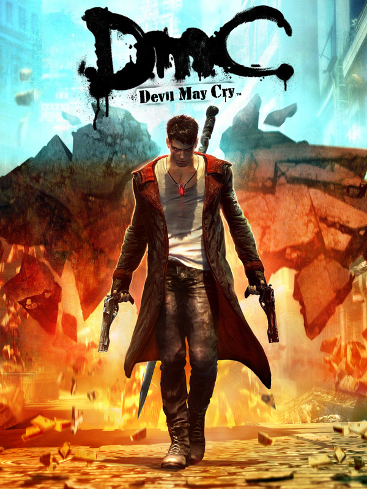

DmC Devil May Cry
DmC Devil May Cry
Detalhes
 |
|
| Tempo de jogo | 1d 1h 3m 0s |
| Última Atividade | 30/01/2023 12:37:17 |
| Adicionado | 07/06/2026 0:35:51 |
| Modificado | 07/06/2026 0:42:56 |
| Status de Conclusão | Jogado |
| Biblioteca | Steam |
| Fonte | Steam |
| Plataforma | PC (Windows) |
| Data de Lançamento | 15/01/2013 |
| Pontuação da Comunidade | 76 |
| Avaliação da crítica | 82 |
| Pontuação do Usuário | |
| Gênero | Adventure Hack and slash/Beat 'em up Puzzle |
| Desenvolvedor | Ninja Theory |
| Editor | Capcom |
| Funções | Single Player |
| Links | Official Website Community Wiki Wikipedia Steam Twitch |
| Tag | |
Descrição
In this retelling of Dante's origin story which is set against a contemporary backdrop, DmC Devil May Cry™ retains the stylish action, fluid combat and self-assured protagonist that have defined the iconic series but inject a more brutal and visceral edge.
The Dante of DmC is a young man who has no respect for authority or indeed society in general. Dante knows that he is not human, but also that he is not like the demons that have tormented him throughout his life. Caught between worlds, he feels like an outcast.
Thanks to his twin brother Vergil, leader of the anti-establishment group called “The Order”, Dante is now discovering and coming to terms with what it means to be the child of a demon and an angel. This split personality has a real impact on gameplay with Dante being able to call upon angel and demon abilities at will, transforming his Rebellion sword on the fly to dramatically affect both combat and movement.
For DmC Capcom has teamed up with UK development studio, Ninja Theory, renown for delivering action titles with compelling characters and narrative coupled with high production values. The combination of Ninja Theory’s expertise and Capcom’s unrivalled heritage in producing combat focused action titles will ensure that this latest addition to the over 11-million selling series will remain true to the Devil May Cry DNA so cherished by the fans, while bringing a new level of cinematic quality to the title.
The Dante of DmC is a young man who has no respect for authority or indeed society in general. Dante knows that he is not human, but also that he is not like the demons that have tormented him throughout his life. Caught between worlds, he feels like an outcast.
Thanks to his twin brother Vergil, leader of the anti-establishment group called “The Order”, Dante is now discovering and coming to terms with what it means to be the child of a demon and an angel. This split personality has a real impact on gameplay with Dante being able to call upon angel and demon abilities at will, transforming his Rebellion sword on the fly to dramatically affect both combat and movement.
For DmC Capcom has teamed up with UK development studio, Ninja Theory, renown for delivering action titles with compelling characters and narrative coupled with high production values. The combination of Ninja Theory’s expertise and Capcom’s unrivalled heritage in producing combat focused action titles will ensure that this latest addition to the over 11-million selling series will remain true to the Devil May Cry DNA so cherished by the fans, while bringing a new level of cinematic quality to the title.
Key Features
- Survive Limbo - The world of Limbo is a living and breathing entity, out to kill Dante. The world will transform in real-time and try to block off and even kill our hero. Our protagonist will have to master demonic powers to shape Limbo the way he sees fit, while perfecting his angelic skills to traverse this hazardous, twisted world.
- Who is Dante? – Explore a retelling of Dante’s origin story in a gripping narrative featuring familiar faces from the series alongside all new characters, including Vergil, Dante’s twin brother.
- Unbridled action – The intense and iconic sword and gun based combat returns with the addition of new Angel and Demon weapons and abilities, all designed to dispatch the demonic spawn back to hell with style and panache. Weapons include:
- “Rebellion”: Dante’s trusted sword, given by his father Sparda, provides a great mix of combos and attacks, great for sending enemies skyward.
- “Ebony & Ivory”: These guns are good for keeping enemies at bay, maintaining combos and juggling enemies in the air.
- “Arbiter”: a demonic axe that can deliver massive blows and break through enemy shields.
- “Osiris”: an angelic scythe with fast attacks and great for crowd control.
- “Eryx”: powerful demonic gauntlets that pack enough punch to parry even the strongest attacks and juggle the heaviest enemies.
- “Rebellion”: Dante’s trusted sword, given by his father Sparda, provides a great mix of combos and attacks, great for sending enemies skyward.
- Retaining the Devil May Cry DNA – Capcom staff, including team members from previous Devil May Cry titles, have been assigned to the project from the outset to ensure DmC is a true addition to the Devil May Cry franchise.
- Unrivalled production values - Ninja Theory will take advantage of the latest performance capture technology to deliver a level of character design, story-telling and cinematics that perfectly complements DmC’s high-octane combat.